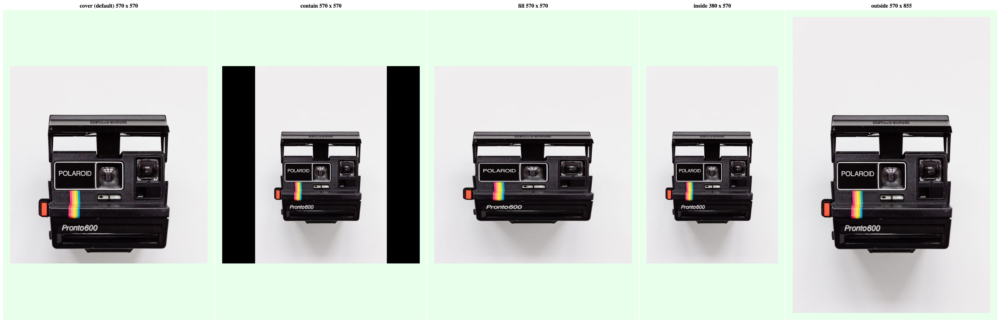

Exposes several image processing functions built on the Sharp image processing library. This is a low-level helper plugin generally used by other Gatsby plugins. You generally shouldn’t be using this directly but might find it helpful if doing very custom image processing.
It aims to provide excellent out-of-the box settings for processing common web image formats.
For JPEGs it generates progressive images with a default quality level of 50.
For PNGs it uses pngquant to compress images. By default it uses a quality setting of [50-75]. The pngCompressionSpeed value is a speed/quality trade-off from 1 (brute-force) to 10 (fastest). Speed 10 has 5% lower quality, but is 8 times faster than the default (4). In most cases you should stick with the default, but if you have very large numbers of PNGs then it can significantly reduce build times.
npm install gatsby-plugin-sharp
// In your gatsby-config.js
plugins: [
{
resolve: `gatsby-plugin-sharp`,
options: {
// Defaults used for gatsbyImageData and StaticImage
defaults: {},
// Set to false to allow builds to continue on image errors
failOnError: true,
// deprecated options and their defaults:
base64Width: 20,
forceBase64Format: ``, // valid formats: png,jpg,webp
useMozJpeg: process.env.GATSBY_JPEG_ENCODER === `MOZJPEG`,
stripMetadata: true,
defaultQuality: 50,
},
},
]defaults: default values used for gatsbyImageData and StaticImage from gatsby-plugin-image. Available options are: formats,placeholder,quality,breakpoints,backgroundColor,tracedSVGOptions,blurredOptions,jpgOptions,pngOptions,webpOptions,avifOptions. For details of these, see the reference guide.failOnError: default = true. By default builds will fail if there is a corrupted image. Set to false to continue the build on error. The image will return undefined.Other options are deprecated, and should only be used for the legacy fixed and fluid functions.
width (int, default: 400)height (int)quality (int, default: 50)jpegQuality (int)pngQuality (int)webpQuality (int)jpegProgressive (bool, default: true)pngCompressionLevel (int, default: 9)base64(bool, default: false)src (string)width (int)height (int)aspectRatio (float)Automatically create sizes for different resolutions — we do 1x, 1.5x, and 2x.
width (int, default: 400)height (int)quality (int, default: 50)jpegQuality (int)pngQuality (int)webpQuality (int)base64 (string)aspectRatio (float)width (float)height (float)src (string)srcSet (string)Create fluid sizes (in width) for the image. If the max width of the container for the rendered markdown file is 800px, the sizes would then be: 200px, 400px, 800px, 1200px, 1600px – enough to provide close to the optimal image size for every device size / screen resolution.
If you want more control over which sizes are output you can use the srcSetBreakpoints parameter. For example, if you want images that are 200, 340, 520, and 890 wide you can add srcSetBreakpoints: [ 200, 340, 520, 890 ] as a parameter. You will also get maxWidth as a breakpoint (which is 800 by default), so you will actually get [ 200, 340, 520, 800, 890 ] as breakpoints.
On top of that, fluid returns everything else (namely aspectRatio and a base64 image to use as a placeholder) you need to implement the “blur up” technique popularized by Medium and Facebook (and also available as a Gatsby plugin for Markdown content as gatsby-remark-images).
When both a maxWidth and maxHeight are provided, sharp will resize the image using COVER as a fit strategy by default. You can choose between COVER, CONTAIN, FILL, INSIDE, and OUTSIDE as a fit strategy. See the fit parameter below for more details.
maxWidth (int, default: 800)maxHeight (int)quality (int, default: 50)jpegQuality (int)pngQuality (int)webpQuality (int)srcSetBreakpoints (array of int, default: [])background (string, default: ‘rgba(0,0,0,1)’)sizeByPixelDensity (bool, default: false)
base64 (string)aspectRatio (float)src (string)srcSet (string)srcSetType (string)sizes (string)originalImg (string)In addition to their individual parameters, all methods above share the following:
grayscale (bool, default: false)duotone (bool|obj, default: false)toFormat (string, default: ’’)toFormatBase64 (string, default: ’’)base64Width (int, default: 20)cropFocus (string, default: ‘ATTENTION’)fit (string, default: ‘COVER’)pngCompressionSpeed (int, default: 4)rotate (int, default: 0)Convert the source image to one of the following available options: NO_CHANGE, JPG, PNG, WEBP.
base64 image uses the image format from the source, or the value of toFormat. This setting allows a different image format instead, available options are: JPG, PNG, WEBP.
WEBP allows for a smaller data size, allowing you to reduce your HTML size when transferring over the network, or to use a larger base64 placeholder width default for improved image placeholder quality.
Not all browsers support WEBP. It would be wasteful to include a fallback image format in this case. Consider also adding a backgroundColor placeholder as a fallback instead.
The plugin config option forceBase64Format performs the equivalent functionality by default to all your base64 placeholders. toFormatBase64 has a higher priority for base64 images that need to selectively use a different format.
The width in pixels for your base64 placeholder to use. The height will also be adjusted based on the aspect ratio of the image. Use this to increase the image quality by allowing more pixels to be used at the expense of increasing the file size of the data to be transferred.
The default for Gatsby is 20px. This keeps the data size low enough to embed into the HTML document for immediate display on DOM loaded and avoids an additional network request.
Facebook and Medium are both known to use 42px width for their image placeholders. However Medium presently uses a solid background color placeholder to load the page as fast as possible, followed by an image placeholder requested over the network instead of embedding it with base64.
The plugin config has an equivalent option, allowing you to change the default for all base64 placeholders. This parameter option has a higher priority over the plugin config option.
Change the cropping focus. Available options: CENTER, NORTH, NORTHEAST, EAST, SOUTHEAST, SOUTH, SOUTHWEST, WEST, NORTHWEST, ENTROPY, ATTENTION. See Sharp’s resize.
Select the fit strategy for sharp to use when resizing images. Available options are: COVER, CONTAIN, FILL, INSIDE, OUTSIDE. See Sharp’s resize.
Note: The fit strategies CONTAIN and FILL will not work when cropFocus is set to ENTROPY or ATTENTION.
The following image shows the effects of each fit option. You can see that the INSIDE option results in one dimension being smaller than requested, while the OUTSIDE option results in one dimension being larger than requested. 
Change the speed/quality tradeoff for PNG compression from 1 (brute-force) to 10 (fastest). See pngquant’s options.
Rotate the image (after cropping). See Sharp’s rotate.
Uses Sharp’s greyscale to convert the source image to 8-bit greyscale, 256 shades of grey, e.g.
allImageSharp {
edges {
node {
... on ImageSharp {
resize(width: 150, height: 150, grayscale: true) {
src
}
}
}
}
}Applys a “duotone” effect (see I, II, III) to the source image if given two hex colors shadow and highlight defining start and end color of the duotone gradient, e.g.
fixed(
width: 800,
duotone: {
highlight: "#f00e2e",
shadow: "#192550"
}
) {
src
srcSet
base64
}the source image colors will be converted to match a gradient color chosen based on each pixel’s relative luminance.
Logic is borrowed from react-duotone.
You can pass a third optional parameter, opacity:
fluid(
width: 800,
duotone: {
highlight: "#f00e2e",
shadow: "#192550",
opacity: 50
}
) {
src
srcSet
base64
}If set, a semi-transparent version of duotone’d image will be composited over the original image, allowing the original image and its colors to partially “shine through”. Heads up: If the original image contains an alpha channel it will be flattened before creating the composite.
This works by adding an alpha channel to the duotone’d image - then we let Sharp do its magic via overlayWith; quoting the Sharp documentation:
If the overlay image contains an alpha channel then composition with premultiplication will occur.
Generates a traced SVG of the image (see the original GitHub issue) and returns the SVG as “optimized URL-encoded” data: URI. It used in gatsby-image to provide an alternative to the default inline base64 placeholder image.
Uses node-potrace and SVGO under the hood. Default settings for node-potrace:
All node-potrace Potrace parameters are exposed and can be set via the traceSVG argument:
fixed(
traceSVG: {
color: "#f00e2e"
turnPolicy: TURNPOLICY_MINORITY
blackOnWhite: false
}
) {
src
srcSet
tracedSVG
}You can pass a default image quality to sharp by setting the defaultQuality option.
You can opt-in to use MozJPEG for jpeg-encoding. MozJPEG provides even better image compression than the default encoder used in gatsby-plugin-sharp. However, when using MozJPEG the build time of your Gatsby project will increase significantly.
To enable MozJPEG, you can set the useMozJpeg plugin option to true in gatsby-config.js.
For backwards compatible reasons, if useMozJpeg is not defined in the plugin options, the environment variable GATSBY_JPEG_ENCODER acts as a fallback if set to MOZJPEG:
GATSBY_JPEG_ENCODER=MOZJPEGBy default, the build will fail when it encounters an error while processing an image. You can change this so that it continues the build process by setting the plugin option failOnError to false. Sharp will still throw an error and display it in the console as a GraphQL error, but it will not exit the process. It is important to note that any images that would have otherwise failed will not be accessible via childImageSharp until the underlying issue with the image is addressed.
By default, gatsby-plugin-sharp strips all EXIF, ICC and other metadata present in your source file. This is the recommended default as it leads to smaller file sizes.
However, in situations where you wish to preserve EXIF metadata or ICC profiles (example: you are building a photography portfolio and wish to conserve the color profile or the copyright information of the photos you’ve exported from Adobe Lightroom or Phase One’s Capture One), you can set the stripMetadata plugin option to false in gatsby-config.js.
It is important to note that if stripMetadata is set to false, all metadata information will be preserved from the source image, including but not limited to the latitude/longitude information of where the picture was taken (if present). If you wish to strip this information from the source file, you can either leave stripMetadata to its default of true, or manually pre-process your images with a tool such as ExifTool.
This means that there are multiple incompatible versions of the sharp package installed in node_modules. The complete error typically looks like this:
Something went wrong installing the "sharp" module
dlopen(/Users/misiek/dev/gatsby-starter-blog/node_modules/sharp/build/Release/sharp.node, 1): Library not loaded: @rpath/libglib-2.0.dylib
Referenced from: /Users/misiek/dev/gatsby-starter-blog/node_modules/sharp/build/Release/sharp.node
Reason: Incompatible library version: sharp.node requires version 6001.0.0 or later, but libglib-2.0.dylib provides version 5801.0.0To fix this, you’ll need to update all Gatsby plugins in the current project that depend on the sharp package. Here’s a list of official plugins that you might need to update in case your projects uses them:
gatsby-plugin-sharpgatsby-plugin-manifestgatsby-remark-images-contentfulgatsby-source-contentfulgatsby-transformer-sharpgatsby-transformer-sqipTo update these packages, run:
npm install gatsby-plugin-sharp gatsby-plugin-manifest gatsby-remark-images-contentful gatsby-source-contentful gatsby-transformer-sharp gatsby-transformer-sqipIf updating these doesn’t fix the issue, your project probably uses other plugins from the community that depend on a different version of sharp. Try running npm list sharp or yarn why sharp to see all packages in the current project that use sharp and try updating them as well.